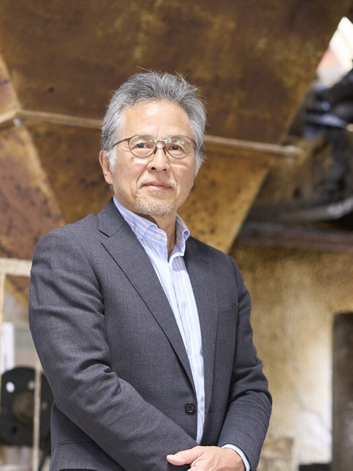
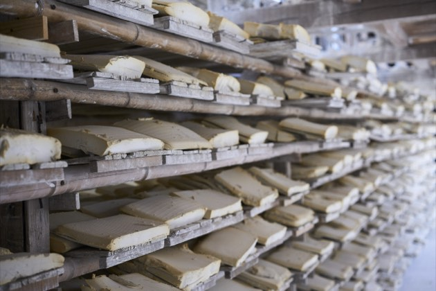
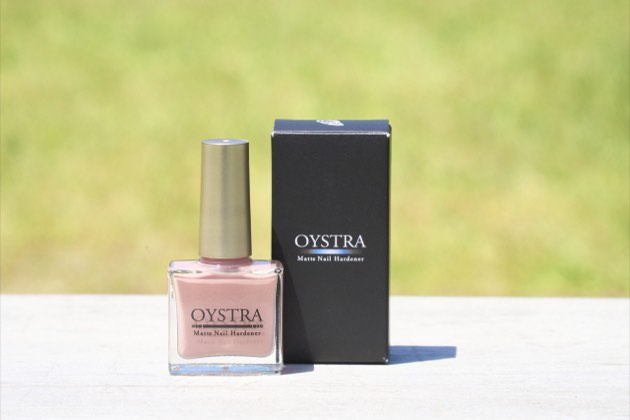
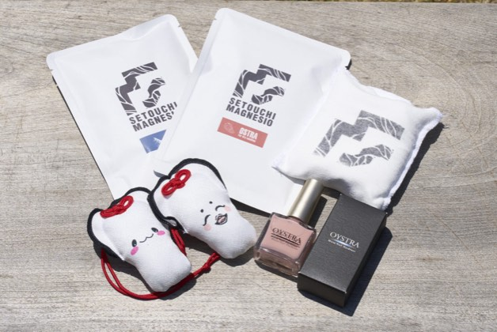
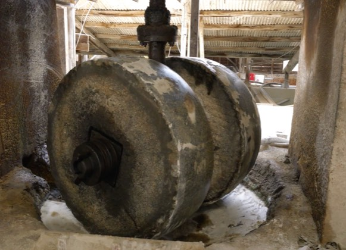
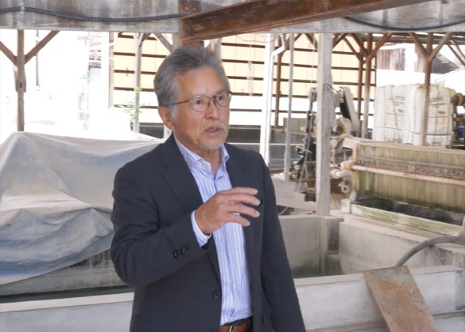
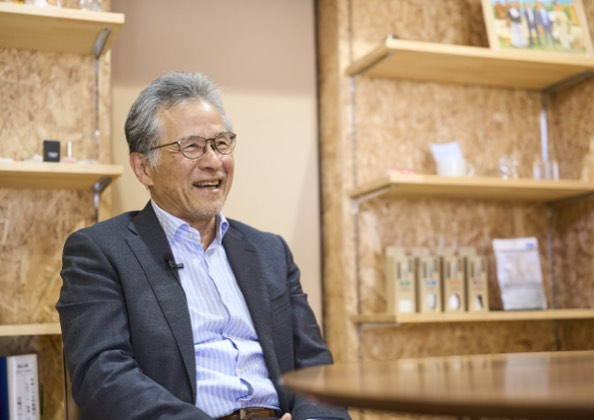
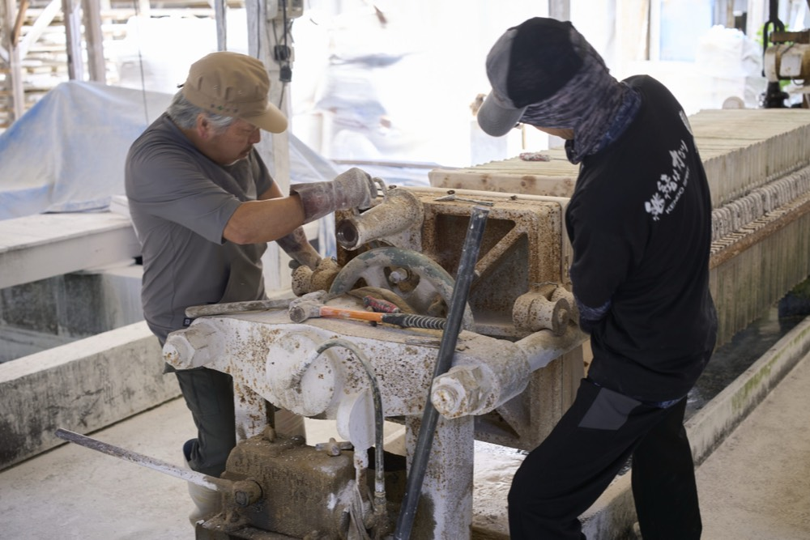

岡山から全国へ!絆を紡ぐクレーの挑戦
瀧本 弘治koji takimoto
山陽クレー工業株式会社 代表取締役社長
1955年岡山県生まれ。1974年岡山大学卒業後、大手建設会社に入社し、技術職としてキャリアを積む。1988年9月に妻の実家が営む山陽クレー工業株式会社へ入社。1997年、42歳で代表取締役に就任。すべての「つながり」に感謝する姿勢を大切に、伝統技術の継承とカキ殻を用いた新規事業開発に邁進し、100年企業への土台を築いている。
企業サイトを見るCHAPTER 01
異業種から飛び込んだ伝統産業への原点
Q瀧本社長は全く異なる建設業界にいらしたそうですが、どのような経緯で山陽クレー工業を引き継がれたのでしょうか?
A私は元々、大手建設会社で技術職として働いていました。図面を引いたり現場を動かしたりする仕事が大好きで、当時は経営の知識など全くありませんでした。山陽クレー工業は妻の祖父が創業した会社なのですが、義父も義祖父も急逝し、業績低迷と大きな借金に苦しむ中、叔父が社長を引き継いでくれました。その時に、地域社会に欠かせない我が社の事業を守っていかなければならないと思い私も入社を決意し、二人三脚で何とか経営を立て直し、私が42歳の時に社長を引き継ぎました。その後も苦しい経営を余儀なくされましたが「今の従業員の雇用を守り、何が何でも会社を存続させる」という強い決意だけは当時から一瞬たりとも揺らぐことはありませんでした。
Q経営危機という非常に厳しい状況からのスタートに不安や迷いはありませんでしたか?
A最初は貸借対照表を見ても何のことやら分からない状態からの手探りで不安はありました。しかし、私が徹底したのは「お客様ファースト」の姿勢です。技術屋としての意地もありユーザーが求める物性を追求するために原料の配合設計などを地道に行いました。
その真摯な取り組みを製造メーカーと商社を兼ねる最重要顧客である企業が見ていてくださったのです。「山陽クレーさんなら今までの実績もあり、心から信頼できる。我が社の製造品の一部をそちらに移管したい」という大変ありがたい申し入れをいただき、奇跡的に会社存続の危機を脱することができました。この経験から、ビジネスにおける「信頼」と「絆」の大切さを深く身に染みて学びました。
CHAPTER 02
独自の製法技術と「先入観を捨てる」という覚悟
Q山陽クレー工業の事業の強みや、激しい時代の変化を生き抜いてこられた理由を教えてください。
A今年で創業86年を迎える我が社は元々は製紙用の填料(紙の充填剤となる粘土粉末)の製造からスタートしました。かつて岡山の吉永地区には同業者が30数社もあり非常に栄えていましたが、中国からの安い輸入品の台頭により一気に市場が置き換わり今ではわずか4社ほどしか残っていません。
我が社が生き残れたのは、紙向けだけでなく塗料や接着剤、樹脂といった「建材関係」の販路をいち早く開拓していたからです。我が社には「湿式」と「乾式」製法の2つの工場があり粗粒子から微粒子まで幅広い製品を作り分けられる高い技術力があります。この引き出しの多さこそが、時代の波を乗り越える最大の優位性です。
Q近年では、その技術を応用した「カキ殻パウダー」がスポーツや日用品の分野で大きな奇跡を起こしていると伺いました。
A約15年前にカキ殻の粉砕を頼まれたのが始まりでした。海のものであるカキ殻には異物が多く混入しており、純度の高いパウダーにするため2年間試行錯誤して我が社独自の異物除去技術を確立しました。転機となったのは約10年前、長男が会社へ入社した時のことです。彼が高校時代にお世話になった先生が岡山の山岳・スポーツクライミング連盟の会長をされており「ボルダリングの滑り止めに使えるのでは」と提案されたのです。
実は私の中に「クレーの石の粉は水に濡れるとぬるぬると滑るもの」という強烈な先入観があり、最初は「絶対に無理だ、滑るからダメだ」と大反対したのです。しかし、試しに試作して地元のクライミングジムで使ってもらったところ、ユーザーから「これならつかえるよ!」と絶賛され私の先入観は完全に打ち砕かれました。
そこから野球(野手用ロジン)・陸上の投てき競技・体操・バドミントン・弓道など様々なスポーツ分野へ用途が広がりました。昨年、アスリートから「爪が割れる」という相談を受け開発した爪の補強用ネイルは、スポーツ選手だけでなく女性・高齢者・農家・看護師など幅広い層や職種から爆発的な反響をいただきました。また、落語家の方の一言から生まれた「すべらないお守り」は、近所の鯉のぼりメーカーさんが廃棄していた高級な端切れ生地を使用しており、テレビ局を含めた3社コラボ製品としてヒットしています。先入観を捨ててゼロからチャレンジすることの大切さを、このカキ殻パウダーが教えてくれました。






CHAPTER 03
「強い経営体質」の構築と社員全員が主役の職場

Q現在の社員数は11名とのことですが、人手不足や高齢化が進む現代において、どのような組織づくりを意識されていますか?
A現在の我が社の平均年齢は20代の社員が2名いますが50歳を超えています。しかし、我が社の自慢は「定着率の高さ」です。アットホームで誰もが意見を言いやすく、楽しく明るく働ける職場環境を何よりも大切にしています。ハローワークの担当者の方からも「働きやすい職場として優先的に紹介しています」と言っていただけるほどです。最近でも50代の派遣社員の方が「山陽クレー工業で正社員になりたい」と志願してくれています。
今後は持続的な成長に向けて30代や40代前半といった若い力を少しずつ採用し育成していくことに力を入れていきたいと考えています。既存のクレー事業を大切に守りながら 時代のニーズに応える新規事業にも積極的に挑戦し、新たな子供向けのスポーツクラブ運営といった地域貢献事業を通じて地域に愛される企業を目指しています。
Q瀧本社長が経営者として、従業員の皆さんに対して最も大切にしている思いをお聞かせください。
A我が社の企業スローガンは、すべての「つながり」に感謝し100年企業を目指すことです。従業員、お客様、仕入れ先、そして地域社会。過去から未来へと続くすべての「絆」に感謝することが経営の根幹です。
マネジメントにおいては私自身が感情的にならず一歩引いて相手の気持ちを徹底的に考えることを心がけています。「品質と信頼の追求」を軸に、社員全員が主役となって知恵を出し合える「強い経営体質」を築くこと。伝統を重んじながらも時代のニーズに応える新しい価値を創造し続け社会と共に持続的な成長を遂げていくことが経営者である私の使命です。